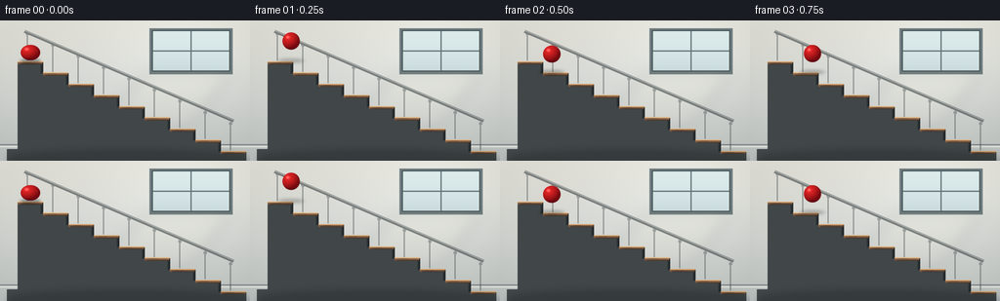
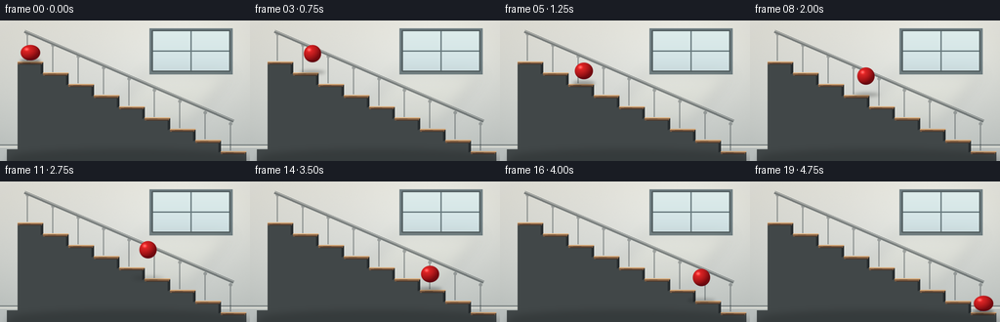

CODING AGENTS AS PIXEL WORLD MODELS
traex/GPT-5.6-Sol · instance_preservation_0021
点击播放 · 原生 RGB 像素
逐轮保存的候选
回放视频、检查图与代码变化。
每份候选均可单独播放。实际图片检查记录在下方工具轨迹中。
候选 01播放与检查图
点击播放 · 原生 RGB 像素


展开代码变化
--- 上一保存版本
+++ 本次保存版本
@@ -0,0 +1,233 @@
+from pathlib import Path
+import math
+import numpy as np
+from PIL import Image, ImageDraw, ImageFilter
+import artifact_io
+
+# Deterministic, hand-rendered 2-D animation. Everything is rendered at 3x
+# resolution and reduced once, so the architectural lines and ball silhouette
+# remain clean at the requested small output size.
+W, H, N = 256, 144, 20
+S = 3
+SW, SH = W*S, H*S
+STEP_X, STEP_Y = 26.0, 11.5
+X0, Y0 = 18.0, 42.0
+R = 9.2
+
+def sc(v):
+ return int(round(v*S))
+
+def pts(seq):
+ return [(sc(x), sc(y)) for x, y in seq]
+
+def polygon(draw, seq, fill):
+ draw.polygon(pts(seq), fill=fill)
+
+def line(draw, seq, fill, width=1):
+ draw.line(pts(seq), fill=fill, width=max(1, sc(width)), joint='curve')
+
+def rect(draw, box, fill, outline=None, width=1):
+ b = tuple(sc(x) for x in box)
+ draw.rectangle(b, fill=fill, outline=outline, width=max(1, sc(width)))
+
+def ellipse(draw, box, fill, outline=None, width=1):
+ b = tuple(sc(x) for x in box)
+ draw.ellipse(b, fill=fill, outline=outline, width=max(1, sc(width)))
+
+
+def make_background():
+ # A calm warm-gray interior with a slight vignette and fine plaster grain.
+ yy, xx = np.mgrid[0:SH, 0:SW]
+ top = np.array([230., 229., 222.])
+ bottom = np.array([194., 200., 199.])
+ t = yy[..., None] / max(1, SH-1)
+ arr = top*(1-t) + bottom*t
+ # Window-side illumination and natural edge falloff.
+ glow = np.exp(-(((xx/S-193)/75)**2 + ((yy/S-31)/55)**2))
+ vignette = ((xx-SW/2)/(SW/2))**2 + ((yy-SH/2)/(SH/2))**2
+ arr += glow[..., None]*np.array([12., 13., 13.])
+ arr -= np.clip(vignette[..., None]*np.array([7., 7., 8.]), 0, 12)
+ rng = np.random.default_rng(731)
+ arr += rng.normal(0, 0.65, (SH, SW, 1))
+ arr = np.uint8(np.clip(arr, 0, 255))
+ im = Image.fromarray(arr, 'RGB').convert('RGBA')
+ d = ImageDraw.Draw(im, 'RGBA')
+
+ # Recessed frosted window. It gives the sphere a plausible light source.
+ rect(d, (153, 8, 238, 55), (111, 126, 130, 120))
+ rect(d, (156, 10, 235, 52), (208, 226, 225, 225))
+ # Translucent sky gradient inside panes.
+ for y in range(sc(11), sc(52)):
+ u = (y/S-11)/41
+ col = (220-int(14*u), 235-int(12*u), 234-int(8*u), 255)
+ d.line([(sc(157), y), (sc(234), y)], fill=col, width=1)
+ line(d, [(195.5, 10), (195.5, 52)], (103, 121, 125, 150), 1.2)
+ line(d, [(156, 31), (235, 31)], (103, 121, 125, 150), 1.2)
+ line(d, [(156, 10), (235, 10), (235, 52), (156, 52), (156, 10)], (79, 91, 93, 180), 1.3)
+
+ # Soft diagonal daylight on the wall.
+ light = Image.new('RGBA', (SW, SH), (0, 0, 0, 0))
+ ld = ImageDraw.Draw(light, 'RGBA')
+ polygon(ld, [(151, 53), (238, 53), (195, 108), (100, 108)], (255, 249, 218, 25))
+ light = light.filter(ImageFilter.GaussianBlur(sc(7)))
+ im = Image.alpha_composite(im, light)
+ d = ImageDraw.Draw(im, 'RGBA')
+
+ # Quiet architectural details.
+ line(d, [(0, 127.5), (256, 127.5)], (117, 124, 123, 90), 1)
+ line(d, [(0, 129.5), (256, 129.5)], (248, 246, 233, 90), .8)
+
+ # Back railing: clearly indicates that the repeated forms are stairs,
+ # while muted contrast keeps the red ball dominant.
+ rail = Image.new('RGBA', (SW, SH), (0, 0, 0, 0))
+ rd = ImageDraw.Draw(rail, 'RGBA')
+ # Balusters rise from alternating treads to a parallel upper hand rail.
+ for k in range(9):
+ bx = X0 + 10 + k*STEP_X
+ by = Y0 + k*STEP_Y
+ topy = by - 28
+ line(rd, [(bx, by-1), (bx, topy)], (63, 72, 74, 115), 1.35)
+ ellipse(rd, (bx-1.7, topy-2, bx+1.7, topy+1.4), (61, 69, 71, 100))
+ line(rd, [(X0+7, Y0-31), (X0+8*STEP_X+13, Y0+8*STEP_Y-31)], (49, 57, 59, 145), 3.0)
+ line(rd, [(X0+7, Y0-32), (X0+8*STEP_X+13, Y0+8*STEP_Y-32)], (219, 222, 216, 95), .7)
+ im = Image.alpha_composite(im, rail)
+ d = ImageDraw.Draw(im, 'RGBA')
+
+ # Solid staircase side. Top profile is an explicit sequence of treads and
+ # risers, making the requested action readable without captions.
+ profile = [(X0, Y0)]
+ for k in range(9):
+ y = Y0 + k*STEP_Y
+ xa = X0 + k*STEP_X
+ xb = xa + STEP_X
+ if k == 0:
+ profile[0] = (xa, y)
+ profile.append((xb, y))
+ profile.append((xb, y+STEP_Y))
+ profile += [(256, 144), (7, 144), (7, 132), (X0, 132)]
+ polygon(d, profile, (65, 71, 72, 255))
+
+ # Individual risers and walnut-colored tread caps. Subtle alternating
+ # shading adds depth while preserving a clean silhouette.
+ for k in range(9):
+ xa = X0 + k*STEP_X
+ xb = xa + STEP_X
+ y = Y0 + k*STEP_Y
+ # vertical riser face at the right edge
+ if k < 8:
+ polygon(d, [(xb-2.2, y+2.0), (xb, y), (xb, y+STEP_Y), (xb-2.2, y+STEP_Y+1)],
+ (39, 44, 46, 230))
+ # top slab and front highlight
+ polygon(d, [(xa, y), (xb, y), (xb-1.5, y+2.6), (xa, y+2.6)],
+ (125 + (k%2)*4, 91 + (k%2)*3, 66, 255))
+ line(d, [(xa, y+.25), (xb, y+.25)], (219, 171, 119, 235), 1.0)
+ line(d, [(xa+2, y+2.45), (xb-2, y+2.45)], (65, 48, 39, 155), .55)
+ # restrained wood grain
+ line(d, [(xa+5, y+1.25), (xa+13, y+1.25)], (72, 53, 43, 90), .45)
+
+ # Staircase lower side receives a soft floor reflection and base shadow.
+ floor_shadow = Image.new('RGBA', (SW, SH), (0,0,0,0))
+ fd = ImageDraw.Draw(floor_shadow, 'RGBA')
+ ellipse(fd, (8, 134, 255, 151), (31, 36, 37, 90))
+ floor_shadow = floor_shadow.filter(ImageFilter.GaussianBlur(sc(4)))
+ im = Image.alpha_composite(im, floor_shadow)
+ return im
+
+
+def ball_layer(cx, cy, rx, ry, angle_hint=0.0):
+ """Render one glossy red sphere/ellipse with continuous radial shading."""
+ # Full-frame transparent layer keeps compositing simple and deterministic.
+ layer = np.zeros((SH, SW, 4), dtype=np.uint8)
+ xlo = max(0, int((cx-rx-2)*S)); xhi = min(SW, int((cx+rx+2)*S)+1)
+ ylo = max(0, int((cy-ry-2)*S)); yhi = min(SH, int((cy+ry+2)*S)+1)
+ yy, xx = np.mgrid[ylo:yhi, xlo:xhi]
+ nx = (xx/S-cx)/rx
+ ny = (yy/S-cy)/ry
+ rr = nx*nx + ny*ny
+ inside = rr <= 1.0
+ nz = np.sqrt(np.clip(1-rr, 0, 1))
+ # Main illumination is from the frosted window/upper left.
+ diffuse = np.clip(-0.48*nx - 0.58*ny + 0.67*nz, 0, 1)
+ edge = np.clip(nz, 0, 1)
+ red = 107 + 100*diffuse + 12*edge
+ green = 10 + 22*diffuse
+ blue = 15 + 18*diffuse
+ # compact white-pink specular reflection and a softer secondary sheen
+ spec = np.exp(-(((nx+0.37)/0.18)**2 + ((ny+0.43)/0.16)**2))*105
+ sheen = np.exp(-(((nx+0.12)/0.50)**2 + ((ny+0.18)/0.42)**2))*12
+ red += spec + sheen
+ green += spec*.78 + sheen*.55
+ blue += spec*.74 + sheen*.48
+ # dark reflected band along the lower edge anchors sphere to the scene
+ lower = np.clip((ny-.55)/.40, 0, 1)*(1-nz)*36
+ red -= lower; green -= lower*.25
+ # Supersampled soft perimeter alpha, about one final pixel wide.
+ alpha = np.clip((1-rr)*S*2.6, 0, 1)*255
+ patch = layer[ylo:yhi, xlo:xhi]
+ patch[..., 0] = np.uint8(np.clip(red, 0, 255))
+ patch[..., 1] = np.uint8(np.clip(green, 0, 255))
+ patch[..., 2] = np.uint8(np.clip(blue, 0, 255))
+ patch[..., 3] = np.uint8(alpha)*inside
+ return Image.fromarray(layer, 'RGBA')
+
+
+def render_frame(i, background):
+ im = background.copy()
+ # Eight successive hops. Contacts land near each tread center, giving a
+ # continuous trajectory rather than teleporting between staircase levels.
+ q = 8.0 * i / (N-1)
+ k = min(7, int(math.floor(q))) if i < N-1 else 7
+ u = q-k if i < N-1 else 1.0
+ cx0 = X0 + STEP_X*.50 + k*STEP_X
+ cx1 = cx0 + STEP_X
+ floor0 = Y0 + k*STEP_Y
+ floor1 = floor0 + STEP_Y
+ cx = cx0 + (cx1-cx0)*u
+ base_cy = floor0 - R + (floor1-floor0)*u
+ # A gentle, consistent parabola. Slightly varied peaks feel less mechanical.
+ hop_h = 17.2 + 1.2*math.sin(k*1.7)
+ cy = base_cy - hop_h * math.sin(math.pi*u)
+
+ # Contact deformation is brief and subtle, keeping the object recognizable.
+ contact = math.exp(-((min(u, 1-u))/0.105)**2)
+ rx = R*(1 + .13*contact)
+ ry = R*(1 - .105*contact)
+
+ # Shadow falls on the tread directly below x. Height controls opacity/size.
+ step_under = int(np.clip(math.floor((cx-X0)/STEP_X), 0, 8))
+ floor_y = Y0 + step_under*STEP_Y
+ altitude = max(0.0, floor_y - (cy+ry))
+ shadow_alpha = int(105 * math.exp(-altitude/27))
+ shadow_w = 10.0 + min(8.0, altitude*.28)
+ shadow_h = max(1.1, 2.35-altitude*.045)
+ sh = Image.new('RGBA', (SW, SH), (0,0,0,0))
+ sd = ImageDraw.Draw(sh, 'RGBA')
+ ellipse(sd, (cx-shadow_w, floor_y-.7-shadow_h, cx+shadow_w, floor_y-.7+shadow_h),
+ (20, 20, 18, shadow_alpha))
+ sh = sh.filter(ImageFilter.GaussianBlur(sc(1.45 + altitude*.025)))
+ im = Image.alpha_composite(im, sh)
+
+ # Tiny impact flecks only on the two terminal landings; neutral color avoids
+ # competing instances while communicating the bounce.
+ if contact > .65 and i not in (0, N-1):
+ flecks = Image.new('RGBA', (SW, SH), (0,0,0,0))
+ fd = ImageDraw.Draw(flecks, 'RGBA')
+ a = int(85*contact)
+ for sign, dx in [(-1, -6.5), (1, 6.5)]:
+ x = cx + dx
+ line(fd, [(x, floor_y-1.5), (x+sign*2.5, floor_y-4.0)], (204,178,139,a), .7)
+ im = Image.alpha_composite(im, flecks)
+
+ im = Image.alpha_composite(im, ball_layer(cx, cy, rx, ry))
+
+ # Downsample only once for crisp high-quality antialiasing.
+ return np.asarray(im.convert('RGB').resize((W, H), Image.Resampling.LANCZOS), dtype=np.uint8)
+
+
+def main():
+ bg = make_background()
+ frames = np.stack([render_frame(i, bg) for i in range(N)], axis=0)
+ artifact_io.save(frames, Path(__file__).resolve().parent)
+
+if __name__ == '__main__':
+ main()
候选 02播放与检查图
点击播放 · 原生 RGB 像素

展开代码变化
--- 上一保存版本
+++ 本次保存版本
@@ -50,7 +50,7 @@
rng = np.random.default_rng(731)
arr += rng.normal(0, 0.65, (SH, SW, 1))
arr = np.uint8(np.clip(arr, 0, 255))
- im = Image.fromarray(arr, 'RGB').convert('RGBA')
+ im = Image.fromarray(arr).convert('RGBA')
d = ImageDraw.Draw(im, 'RGBA')
# Recessed frosted window. It gives the sphere a plausible light source.
@@ -168,7 +168,7 @@
patch[..., 1] = np.uint8(np.clip(green, 0, 255))
patch[..., 2] = np.uint8(np.clip(blue, 0, 255))
patch[..., 3] = np.uint8(alpha)*inside
- return Image.fromarray(layer, 'RGBA')
+ return Image.fromarray(layer)
def render_frame(i, background):
可观测工具轨迹
实际执行的命令与返回图片。
命令 1exit 0
/bin/bash -lc "cat prompt.txt && printf '\\n---RULES---\\n' && cat GENERATION_RULES.md && printf '\\n---SPEC---\\n' && cat task_spec.json"
命令 2exit 0
/bin/bash -lc "find . -maxdepth 2 -type f -printf '%p %s bytes\\n' | sort"
命令 3exit 0
/bin/bash -lc "sed -n '1,240p' artifact_io.py"
命令 4exit 0
/bin/bash -lc "cat > generate.py <<'PY'
from pathlib import Path
import math
import numpy as np
from PIL import Image, ImageDraw, ImageFilter
import artifact_io
# Deterministic, hand-rendered 2-D animation. Everything is rendered at 3x
# resolution and reduced once, so the architectural lines and ball silhouette
# remain clean at the requested small output size.
W, H, N = 256, 144, 20
S = 3
SW, SH = W*S, H*S
STEP_X, STEP_Y = 26.0, 11.5
X0, Y0 = 18.0, 42.0
R = 9.2
def sc(v):
return int(round(v*S))
def pts(seq):
return [(sc(x), sc(y)) for x, y in seq]
def polygon(draw, seq, fill):
draw.polygon(pts(seq), fill=fill)
def line(draw, seq, fill, width=1):
draw.line(pts(seq), fill=fill, width=max(1, sc(width)), joint='curve')
def rect(draw, box, fill, outline=None, width=1):
b = tuple(sc(x) for x in box)
draw.rectangle(b, fill=fill, outline=outline, width=max(1, sc(width)))
def ellipse(draw, box, fill, outline=None, width=1):
b = tuple(sc(x) for x in box)
draw.ellipse(b, fill=fill, outline=outline, width=max(1, sc(width)))
def make_background():
# A calm warm-gray interior with a slight vignette and fine plaster grain.
yy, xx = np.mgrid[0:SH, 0:SW]
top = np.array([230., 229., 222.])
bottom = np.array([194., 200., 199.])
t = yy[..., None] / max(1, SH-1)
arr = top*(1-t) + bottom*t
# Window-side illumination and natural edge falloff.
glow = np.exp(-(((xx/S-193)/75)**2 + ((yy/S-31)/55)**2))
vignette = ((xx-SW/2)/(SW/2))**2 + ((yy-SH/2)/(SH/2))**2
arr += glow[..., None]*np.array([12., 13., 13.])
arr -= np.clip(vignette[..., None]*np.array([7., 7., 8.]), 0, 12)
rng = np.random.default_rng(731)
arr += rng.normal(0, 0.65, (SH, SW, 1))
arr = np.uint8(np.clip(arr, 0, 255))
im = Image.fromarray(arr, 'RGB').convert('RGBA')
d = ImageDraw.Draw(im, 'RGBA')
# Recessed frosted window. It gives the sphere a plausible light source.
rect(d, (153, 8, 238, 55), (111, 126, 130, 120))
rect(d, (156, 10, 235, 52), (208, 226, 225, 225))
# Translucent sky gradient inside panes.
for y in range(sc(11), sc(52)):
u = (y/S-11)/41
col = (220-int(14*u), 235-int(12*u), 234-int(8*u), 255)
d.line([(sc(157), y), (sc(234), y)], fill=col, width=1)
line(d, [(195.5, 10), (195.5, 52)], (103, 121, 125, 150), 1.2)
line(d, [(156, 31), (235, 31)], (103, 121, 125, 150), 1.2)
line(d, [(156, 10), (235, 10), (235, 52), (156, 52), (156, 10)], (79, 91, 93, 180), 1.3)
# Soft diagonal daylight on the wall.
light = Image.new('RGBA', (SW, SH), (0, 0, 0, 0))
ld = ImageDraw.Draw(light, 'RGBA')
polygon(ld, [(151, 53), (238, 53), (195, 108), (100, 108)], (255, 249, 218, 25))
light = light.filter(ImageFilter.GaussianBlur(sc(7)))
im = Image.alpha_composite(im, light)
d = ImageDraw.Draw(im, 'RGBA')
# Quiet architectural details.
line(d, [(0, 127.5), (256, 127.5)], (117, 124, 123, 90), 1)
line(d, [(0, 129.5), (256, 129.5)], (248, 246, 233, 90), .8)
# Back railing: clearly indicates that the repeated forms are stairs,
# while muted contrast keeps the red ball dominant.
rail = Image.new('RGBA', (SW, SH), (0, 0, 0, 0))
rd = ImageDraw.Draw(rail, 'RGBA')
# Balusters rise from alternating treads to a parallel upper hand rail.
for k in range(9):
bx = X0 + 10 + k*STEP_X
by = Y0 + k*STEP_Y
topy = by - 28
line(rd, [(bx, by-1), (bx, topy)], (63, 72, 74, 115), 1.35)
ellipse(rd, (bx-1.7, topy-2, bx+1.7, topy+1.4), (61, 69, 71, 100))
line(rd, [(X0+7, Y0-31), (X0+8*STEP_X+13, Y0+8*STEP_Y-31)], (49, 57, 59, 145), 3.0)
line(rd, [(X0+7, Y0-32), (X0+8*STEP_X+13, Y0+8*STEP_Y-32)], (219, 222, 216, 95), .7)
im = Image.alpha_composite(im, rail)
d = ImageDraw.Draw(im, 'RGBA')
# Solid staircase side. Top profile is an explicit sequence of treads and
# risers, making the requested action readable without captions.
profile = [(X0, Y0)]
for k in range(9):
y = Y0 + k*STEP_Y
xa = X0 + k*STEP_X
xb = xa + STEP_X
if k == 0:
profile[0] = (xa, y)
profile.append((xb, y))
profile.append((xb, y+STEP_Y))
profile += [(256, 144), (7, 144), (7, 132), (X0, 132)]
polygon(d, profile, (65, 71, 72, 255))
# Individual risers and walnut-colored tread caps. Subtle alternating
# shading adds depth while preserving a clean silhouette.
for k in range(9):
xa = X0 + k*STEP_X
xb = xa + STEP_X
y = Y0 + k*STEP_Y
# vertical riser face at the right edge
if k < 8:
polygon(d, [(xb-2.2, y+2.0), (xb, y), (xb, y+STEP_Y), (xb-2.2, y+STEP_Y+1)],
(39, 44, 46, 230))
# top slab and front highlight
polygon(d, [(xa, y), (xb, y), (xb-1.5, y+2.6), (xa, y+2.6)],
(125 + (k%2)*4, 91 + (k%2)*3, 66, 255))
line(d, [(xa, y+.25), (xb, y+.25)], (219, 171, 119, 235), 1.0)
line(d, [(xa+2, y+2.45), (xb-2, y+2.45)], (65, 48, 39, 155), .55)
# restrained wood grain
line(d, [(xa+5, y+1.25), (xa+13, y+1.25)], (72, 53, 43, 90), .45)
# Staircase lower side receives a soft floor reflection and base shadow.
floor_shadow = Image.new('RGBA', (SW, SH), (0,0,0,0))
fd = ImageDraw.Draw(floor_shadow, 'RGBA')
ellipse(fd, (8, 134, 255, 151), (31, 36, 37, 90))
floor_shadow = floor_shadow.filter(ImageFilter.GaussianBlur(sc(4)))
im = Image.alpha_composite(im, floor_shadow)
return im
def ball_layer(cx, cy, rx, ry, angle_hint=0.0):
\"\"\"Render one glossy red sphere/ellipse with continuous radial shading.\"\"\"
# Full-frame transparent layer keeps compositing simple and deterministic.
layer = np.zeros((SH, SW, 4), dtype=np.uint8)
xlo = max(0, int((cx-rx-2)*S)); xhi = min(SW, int((cx+rx+2)*S)+1)
ylo = max(0, int((cy-ry-2)*S)); yhi = min(SH, int((cy+ry+2)*S)+1)
yy, xx = np.mgrid[ylo:yhi, xlo:xhi]
nx = (xx/S-cx)/rx
ny = (yy/S-cy)/ry
rr = nx*nx + ny*ny
inside = rr <= 1.0
nz = np.sqrt(np.clip(1-rr, 0, 1))
# Main illumination is from the frosted window/upper left.
diffuse = np.clip(-0.48*nx - 0.58*ny + 0.67*nz, 0, 1)
edge = np.clip(nz, 0, 1)
red = 107 + 100*diffuse + 12*edge
green = 10 + 22*diffuse
blue = 15 + 18*diffuse
# compact white-pink specular reflection and a softer secondary sheen
spec = np.exp(-(((nx+0.37)/0.18)**2 + ((ny+0.43)/0.16)**2))*105
sheen = np.exp(-(((nx+0.12)/0.50)**2 + ((ny+0.18)/0.42)**2))*12
red += spec + sheen
green += spec*.78 + sheen*.55
blue += spec*.74 + sheen*.48
# dark reflected band along the lower edge anchors sphere to the scene
lower = np.clip((ny-.55)/.40, 0, 1)*(1-nz)*36
red -= lower; green -= lower*.25
# Supersampled soft perimeter alpha, about one final pixel wide.
alpha = np.clip((1-rr)*S*2.6, 0, 1)*255
patch = layer[ylo:yhi, xlo:xhi]
patch[..., 0] = np.uint8(np.clip(red, 0, 255))
patch[..., 1] = np.uint8(np.clip(green, 0, 255))
patch[..., 2] = np.uint8(np.clip(blue, 0, 255))
patch[..., 3] = np.uint8(alpha)*inside
return Image.fromarray(layer, 'RGBA')
def render_frame(i, background):
im = background.copy()
# Eight successive hops. Contacts land near each tread center, giving a
# continuous trajectory rather than teleporting between staircase levels.
q = 8.0 * i / (N-1)
k = min(7, int(math.floor(q))) if i < N-1 else 7
u = q-k if i < N-1 else 1.0
cx0 = X0 + STEP_X*.50 + k*STEP_X
cx1 = cx0 + STEP_X
floor0 = Y0 + k*STEP_Y
floor1 = floor0 + STEP_Y
cx = cx0 + (cx1-cx0)*u
base_cy = floor0 - R + (floor1-floor0)*u
# A gentle, consistent parabola. Slightly varied peaks feel less mechanical.
hop_h = 17.2 + 1.2*math.sin(k*1.7)
cy = base_cy - hop_h * math.sin(math.pi*u)
# Contact deformation is brief and subtle, keeping the object recognizable.
contact = math.exp(-((min(u, 1-u))/0.105)**2)
rx = R*(1 + .13*contact)
ry = R*(1 - .105*contact)
# Shadow falls on the tread directly below x. Height controls opacity/size.
step_under = int(np.clip(math.floor((cx-X0)/STEP_X), 0, 8))
floor_y = Y0 + step_under*STEP_Y
altitude = max(0.0, floor_y - (cy+ry))
shadow_alpha = int(105 * math.exp(-altitude/27))
shadow_w = 10.0 + min(8.0, altitude*.28)
shadow_h = max(1.1, 2.35-altitude*.045)
sh = Image.new('RGBA', (SW, SH), (0,0,0,0))
sd = ImageDraw.Draw(sh, 'RGBA')
ellipse(sd, (cx-shadow_w, floor_y-.7-shadow_h, cx+shadow_w, floor_y-.7+shadow_h),
(20, 20, 18, shadow_alpha))
sh = sh.filter(ImageFilter.GaussianBlur(sc(1.45 + altitude*.025)))
im = Image.alpha_composite(im, sh)
# Tiny impact flecks only on the two terminal landings; neutral color avoids
# competing instances while communicating the bounce.
if contact > .65 and i not in (0, N-1):
flecks = Image.new('RGBA', (SW, SH), (0,0,0,0))
fd = ImageDraw.Draw(flecks, 'RGBA')
a = int(85*contact)
for sign, dx in [(-1, -6.5), (1, 6.5)]:
x = cx + dx
line(fd, [(x, floor_y-1.5), (x+sign*2.5, floor_y-4.0)], (204,178,139,a), .7)
im = Image.alpha_composite(im, flecks)
im = Image.alpha_composite(im, ball_layer(cx, cy, rx, ry))
# Downsample only once for crisp high-quality antialiasing.
return np.asarray(im.convert('RGB').resize((W, H), Image.Resampling.LANCZOS), dtype=np.uint8)
def main():
bg = make_background()
frames = np.stack([render_frame(i, bg) for i in range(N)], axis=0)
artifact_io.save(frames, Path(__file__).resolve().parent)
if __name__ == '__main__':
main()
PY
python generate.py
python - <<'PY'
import numpy as np
from pathlib import Path
from PIL import Image
z=np.load('pixels.npz')['pixels']
print('pixels', z.shape, z.dtype, 'frames png', len(list(Path('frames').glob('*.png'))))
for i in [0,1,2,5,10,15,19]:
a=np.array(Image.open(f'frames/{i:02d}.png'))
# centroid of saturated red pixels
m=(a[:,:,0]>130)&(a[:,:,0]>a[:,:,1]*2.3)&(a[:,:,0]>a[:,:,2]*2.0)
ys,xs=np.where(m)
print(i, 'red centroid', (round(xs.mean(),1),round(ys.mean(),1)), 'n',len(xs), 'rgb range', a.min(),a.max())
PY
ls -lh pixels.npz inspection.png transition_check.png index.html"命令 5exit 0
/bin/bash -lc "python - <<'PY'
p='generate.py'
s=open(p).read().replace(\"Image.fromarray(arr, 'RGB').convert('RGBA')\", \"Image.fromarray(arr).convert('RGBA')\").replace(\"Image.fromarray(layer, 'RGBA')\", \"Image.fromarray(layer)\")
open(p,'w').write(s)
PY
python generate.py
python - <<'PY'
import json, numpy as np
from pathlib import Path
from PIL import Image
spec=json.load(open('task_spec.json'))
files=sorted(Path('frames').glob('*.png'))
assert len(files)==spec['frames']
for p in files:
im=Image.open(p)
assert im.mode=='RGB' and im.size==(spec['width'],spec['height'])
a=np.load('pixels.npz')['pixels']
assert a.shape==(spec['height'],spec['width'],spec['frames'])
assert Path('index.html').stat().st_size>0
print('Validated: 20 RGB frames, 256x144, artifacts complete; generate.py reruns cleanly.')
PY"保存候选 2 份；完成命令 5 次；可验证图片返回 0 张。原始 API 响应与完整日志保留在本地。